需求和架构 (1) [06-Raw/26生成式软件工程/NJU]
用南大教务系统当活体样本，讲清「需求为什么会滚成屎山、架构为什么要从第一行代码就开始」；后半段用二维码生成器和院系改名，推到 CRUD 的死穴与 event sourcing。
- UP：绿导师原谅你了（南京大学 蒋炎岩）
- 链接：https://www.bilibili.com/video/BV1Rch76WEfQ
- 播放量：17210
- 时长：96:51
官方章节时间轴
| 时间 | 章节 |
|---|---|
| 00:00–15:03 | 引言 (后半音频翻车) |
| 15:03–44:28 | 需求工程 |
| 44:28–1:12:32 | 无处不在的架构 |
| 1:12:32–1:36:50 | 回到教务系统 |
课堂实录（按时间顺序）
00:00–06:17 · 从瀑布模型到软件不软
开场先把上一讲的瀑布模型接回来：intent 走向 spec 再走向 implementation，层与层之间是 data dependency，Royce 正是抓住这一点说，前面一处设计错了会往回污染一大片，所以才需要 traceability 和 UML 这类有语义的表达。接着他给出更本质的理由——软件一点都不「软」，它是纯逻辑制品，容不下细微差错。程序从标准输入读一个 N=1，如果宇宙射线把无符号整数的最高位翻成 1，它立刻变成巨大的数，程序会无限制地读数直到 memory error；数据中心里也会因热噪声出现同一条指令结果不同的 silent error。
06:17–11:30 · 软件工程只能从底层学起
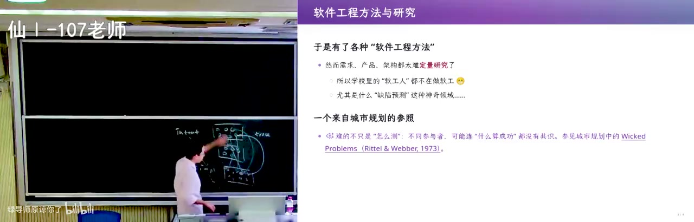
由此他说软件工程这门课很难教：一个关乎整个生命周期的学科，学生却只能从最底层的 C 语言往上走，因为没写过代码、没体会过开发的痛苦，就做不好需求，也估不准一件事要花多少成本。但 AI 时代变了——他让 AI 生成目标明确的代码时，只要边界划清、validation 设计好，甚至可以不看代码，那剩下的杠杆就落在 intent 到 spec、产品设计和架构这三段。他也提到南大软工在 CS ranking 上的位置，说那些研究很多都集中在和编码相关的 implementation 上。
11:30–14:58 · MVP 的选择与技术债
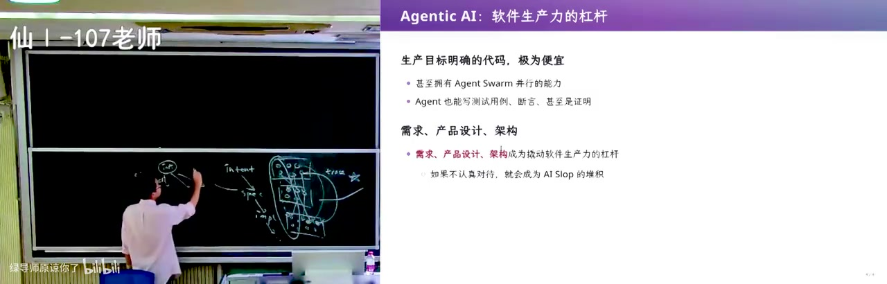
做 MVP 没问题，但要先做最重要的功能：别在做 MVP 的时候就去调按钮样式，因为按钮样式依赖整个界面设计，界面设计又依赖所有功能的实现，上层一改就白做。同样一个 MVP 需求，加上几个字的 prompt——做成 CLI 还是 client/server——会得到完全不同的架构：CLI 版多出一个 cli.py，client/server 版会先挑数据库、写出 db.ts，而文件一旦进入 agent 上下文，后面每个需求都带着这段历史，这就是技术债。所以他说需求、产品设计、架构这三段，才是撬动软件生产力真正的杠杆。
14:58–19:30 · 教务系统：史诗级需求爆炸
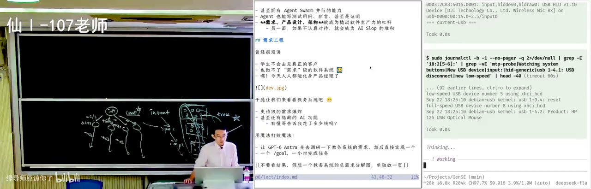
需求工程他不用教科书案例，换成自己身边的样本：南大本科教学服务平台，自称「史诗级的需求爆炸」。现场演示里这系统新加了 AI 问答，问「仙林教学楼的灯一直没解决该打给谁」，它答基建处，但他之前在平台上提过又被基建处打回；再问「我现在上什么课」，它认出教师身份，给了教师课表。他吐槽这功能一定花了很多钱，不如把预算变成 token 补贴给大家；随后点开收藏的教学任务，说学生名单里能直接看到电话号码，这是个很糟糕的 feature，自己填教学周时也没有任何人来审计。
19:30–23:22 · 功能巡览：教材与慕课助教
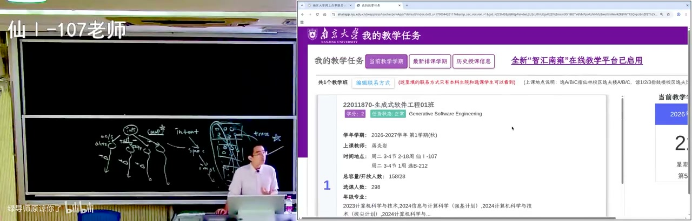
界面上的功能点到看不完：编辑联系方式、当前学期与最新排课学期、历史授课信息里还要选学年学期，还有期末考试签到表——没到发布的时候点它，会弹窗告诉你无法打印，这在他看来是做过了需求分析的痕迹。但编辑教材点下去直接失败，他说「我们已经成功发现了一个 bug」，查看大纲又等了很久才刷新出来，只显示最新一个教学班。最典型的是助教模块：他的课没有助教，慕课助教是疫情期间领导要求加的需求，之后又要求慕课助教不能当成普通教学班的助教，于是长出单独一套逻辑，点新增则弹出「请在可维护时段内操作」。
23:22–28:19 · 让 agent 写一份需求说明书
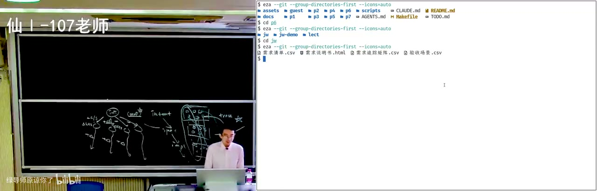
于是他让 agent 去探索教务系统里「和教师相关」的功能，产出一份《南京大学本科教学服务平台需求说明书》。这份文档从调研方法、证据边界、业务目标、成功标准，一路到用例规约、功能需求、术语表、验收场景和需求清单；他念了一条「门户与身份」的需求——一个服务支持多种已分配身份时要提供身份选择并显示当前身份，正好对上他登录时被要求选教师还是本科生的界面。有了带编号的形式化 ID 就能建 traceability，把自然语言里「教学班和学生管理有关」变成可追踪的条目；他也借课程作业说这层量级：OJ 的 spec 只写输入输出，而计算机系统基础课要你实现 NEMU。
28:19–31:55 · 只给文档复现假教务系统
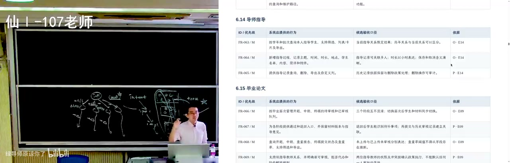
接着把 NEMU 那层类比说完：一句话的「实现指令解释」，在文档里展开成一大篇，所以他说计算机系统基础课第一个 lab 做调试器、第二个 lab 解释指令，学生第一次见到这么长的 specification。回到需求工程，他展示验收场景和需求清单，说有了形式化 ID 就能把前 20 条需求分给一个团队、后 20 条分给另一个，管理者的进度一目了然。真正的「AI 魅力时刻」是下一步：起一个 sub agent，只给它这份需求说明书、不看真实系统，让它实现一个假教务系统；结果页面、教学任务、教材管理都能跑，点保存记录真的提示「记录已保存」。
31:55–35:27 · 53 岁的教务员与同理心
bug 也随之出现：他把一位同学的缺课记录填成超过一学期总课时的数字，系统照样保存，说明校验没做全。他由此说到需求工程真正的难点不在写文档，而在无尽地和客户沟通，把「要不要放当前学期学年」「修改按钮放哪儿」这些细节跟用户对齐，因为用户不是你自己。这里需要同理心：用户可能是本科毕业、53 岁、还有两年就退休的教务员，上大学时甚至没操作过电脑，她要的只是字大一点、点鼠标别点歪；而做需求的人容易假设所有人都会写程序。他也承认这是行业壁垒：做了 20 年教务的公司知道学位授予流程，本科生不知道。
35:27–40:02 · 离散数学拆成两门之后
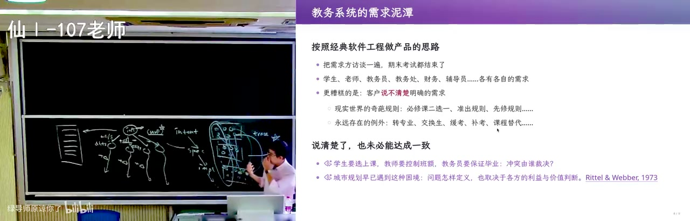
但需求永远说不清楚，也不是一成不变，他拿南大把离散数学拆成上下两门举例：原来系统里只写「必须选修离散数学」就能毕业，现在要变成「离散数学 或 离散数学一」。当初提需求时说的是一个界面、一个下拉框、一个「增加一条」按钮选一门课，规则一改就得在下拉框里加一个「或」，每加一条规则屎山就长一截。再往外还有重修、转院系课程抵扣——软院也有一门离散数学，能抵计算机学院的「一和二」还是只能抵「一」，一旦面对开放的物理世界就没有尽头。
40:02–43:47 · 改一个缺课次数就 500
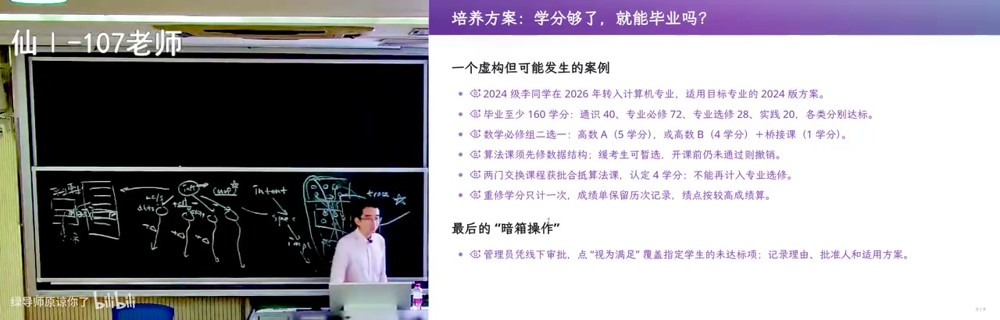
系统覆盖不了的例外最后都靠人：有学生第六年还差离散数学，而春季学期那门课不开，教学院长认为两门课可以替代，于是打电话给工程师，直接进数据库把这位同学的毕业条件改成满足，再走层层审批留档。他自己也撞过一次：2018 年第一次用教师端，想给某位同学记一次缺课，把次数从 0 改成 1，结果所有能选出该学生的页面直接 500，第二天工程师进数据库把那条记录修好了。所以他给这一段下的判断是「没有银弹」：软件一上线就和物理世界交手，只能背着技术债维护，最早那一刻留下的决策会跟着软件一辈子。
43:47–47:15 · 架构就是把复杂性分解
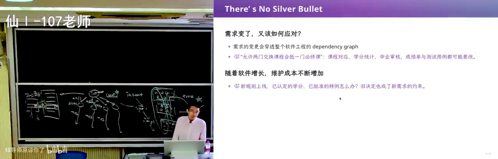
那怎么办？他的答案是架构：MVP 阶段别把所有事情都塞进来，先想「第一步迈向哪里」对软件的长期生存最有利，让最小的软件在需求膨胀时还有一点韧性，说白了就是把耦合解开。不要一上来就拍板「用一个数据库存所有东西」，那样能很快得到能跑的原型，但也很容易掉进维护泥潭。哪怕十行代码也有架构：main 里读入、处理、输出，本身就是一次复杂性分解，而大家写 OJ 时经常就是这么写的。
47:15–50:58 · getopt 与解析状态
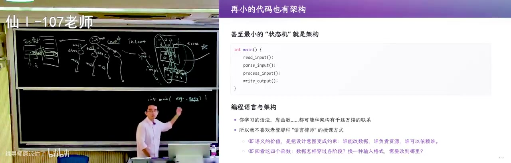
他拿命令行程序把这件事讲具体：main 从操作系统拿到的是一串字符串 argv，如果在保研机试现场一个个 string compare，就太原始了；正确的做法是 getopt，按 POSIX 的约定把参数收成一个 parsing state，再 while 加 switch 分派。这就是架构——argv 的变化五花八门，长短参数、npm 那种子命令，但都被隔在一个稳定接口后面；去看 ripgrep、ls 这类真实项目的源码，背后都有这层设计。他也顺手批评「语言律师」式的授课：只讲一个 lambda 语法，等于没讲。
50:58–55:00 · 同一个汉诺塔四种写法
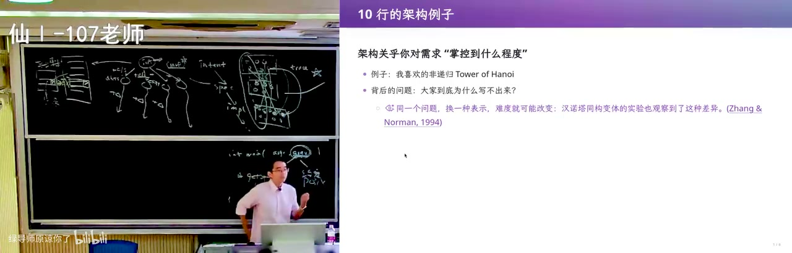
架构是种品位，而品位和需求连在一起：你只有对需求掌握到一定程度，才谈得上为未来的需求做设计，所以他讲了汉诺塔——读研时问保研学生能不能写非递归版本，对方摇头，于是成了课堂例子。同一个 prompt 下，GPT-6 走数学路线，说「盘子编号 = 步数二进制末尾零的个数 + 1」再配固定移动方向，极度优化但没人看得懂；DeepSeek v4 flash 写出标准答案，把剩下的任务留在栈里、每次执行栈顶，因为它抓住了语料里那句「递归就是栈」；豆包选了同样的方案，代码却有瑕疵。他自己的版本是把 C 语言的小步语义翻译成状态机，能机械地把任意递归改成非递归，对汉诺塔来说是 overkill，但正好练习对程序语义的理解。
55:00–58:59 · 压缩就是智能与架构品位
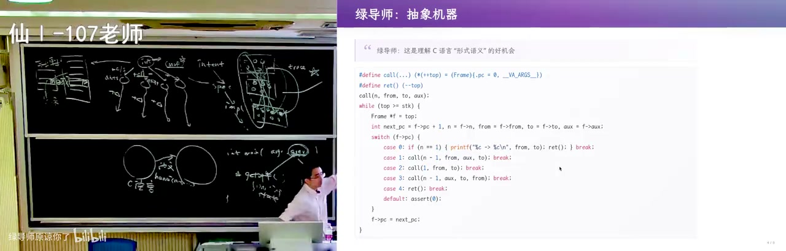
他承认这个状态机版本对汉诺塔并不优雅，但两个版本是等价的，做一个 simplification 就能互相变过去，而他更愿意借它讲清形式语义，也相信强化学习能把模型往这个方向引。他还补了一个反例：在百度搜「非递归汉诺塔」，第一条还是递归版，往下 CSDN 那版问题比 AI slop 还严重。所以同一个汉诺塔的四种表达正好用来衡量抽象水平，他说「压缩就是智能」——把一个问题的不同抽象层摆出来，就能看出架构水平的高低。那架构能力从哪来？从你学过的每一个优雅的东西上来，总是从 first principle 推导，也包括和教科书之外的人打交道：那位快退休的教务员只想字大一点、点鼠标别点歪。
58:59–1:03:30 · 在 Excel 里生成二维码
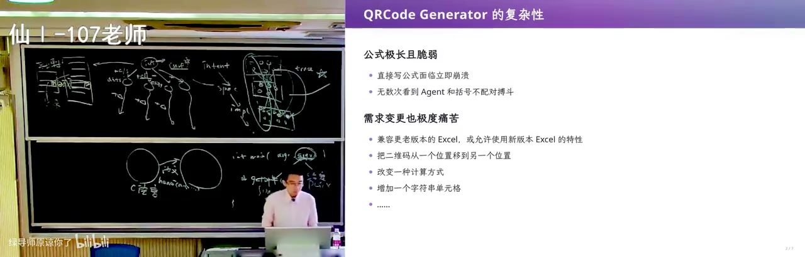
量级抬到 2000 行，例子是「在 Excel 里生成二维码」：需求看起来非常确定——一个输入单元格，输出一片 01 矩阵，扫出来就是能跳转的二维码。但直接写公式会得到一坨巨长的公式，因为 Excel 的表达能力有限，就像让人用 Brainfuck 去实现一个不平凡的程序；而且这需求看似明确其实模糊：Excel 从 2019 到 2023 一直在加函数，查找学号对应的成绩以前用 VLOOKUP，后来微软推 XLOOKUP，到底兼容旧版还是只用新版，取决于这张表是发给教务老师还是自己用一次就扔。他也提到 agent 对自己的能力有估计，这种明显超出能力范围的任务它还是会试着分解，但今天模型做架构这件事还是落后一些。
1:03:30–1:08:02 · Excel 版本与硬编码的坑
如果 AI 是按 Excel 2023 的公式写的，你回头要求兼容 2019 甚至更老，就等于从设计到实现全部推翻重做；2000 行的项目可以重做，但嵌进教务系统、牵动别的部分，就要加人加钱。位置也一样：他说最后对表格放的地方不满意、想整体右移一格，如果单元格全是硬编码就立即崩，所以这个实现对需求变更的抵抗力很差。跳出问题看，这其实是一个编译问题：二维码本身完全有规范，版本、纠错等级、掩码、大小、数据编码 0100 的字节模式、数据多项式模生成多项式再拼上纠错码 ECC，用 qrcode.py 几十行就写完了；难的是没有 Python 到 Excel 的编译器，Excel 是为财务报表设计的，不是图灵完备的计算工具。
1:08:02–1:12:15 · 中间语言加两个后端
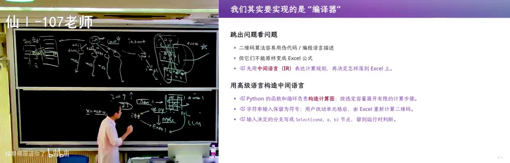
于是他的架构是在 Python 和 Excel 中间再造一个语言：表达式树，每个节点既能递归翻译成 Python，也能翻译成 Excel 公式——把一个节点的结果放进任意单元格，再把两个格子的结果拼起来。分工是让大模型只生成这个中间语言的二维码计算逻辑，先翻译成 Python 验证公式对不对，验证过了再译成 Excel 交付。这和 getopt 是同一个套路：先造一个稳定的中间表示，再从它出发做下一步。有了中间语言还能做优化——循环里每次算的值一样就外提到循环外，先 profile 找瓶颈再改写；Excel 换版本也只需换掉算子的实现。
1:12:15–1:16:24 · AI 生成的单体 CRUD
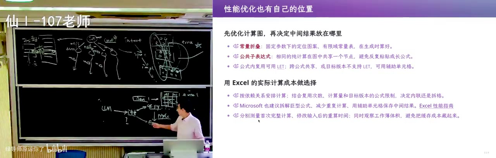
他说这套「先造中间表示」的思路，今天的 AI 编译器其实也在做；讲完十行的、两千行的，他说架构只有一件事——跳出问题看问题，不是把数据库、微服务、流式框架框起来。先看 AI 实现的那版教务系统：一个几十 KB 的 TSX 加一个 38KB 的 services，整体还是单体，里面是一个从头到尾的 function applications(...) 巨型函数，AI 还贴心地用格式化工具排好了版。他另起一个 session 问这套软件能不能维护，答案是「业务逻辑挤在几个大文件里，但维护没问题」——经典三层单体、前后端分离，还带乐观锁、幂等、事务、审计、统一错误处理，AI 甚至说它数据驱动、横向扩展性很好。
1:16:24–1:19:56 · CRUD 世界观与数据库范式
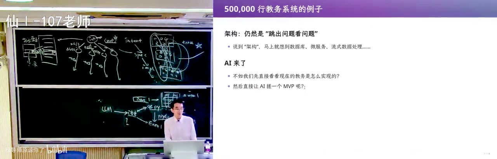
但他跳出看，这还不是好架构，因为本质是 CRUD：世界观是「软件 = 物理世界在信息世界的投影」，一切是状态机，所以系统被建模成状态迁移系统。状态存在数据库里，学生一张表、学院一张表、选课一张表；范式要求消除冗余，引用学生要用学号 id 而不是姓名，否则学生改名（在中国是合法的）就要改两个地方。前后端分离下，「退学」就是一次 update，A 从状态里消失，页面永远是这个当前状态的投影。
1:19:56–1:25:05 · 当前状态把历史丢掉了
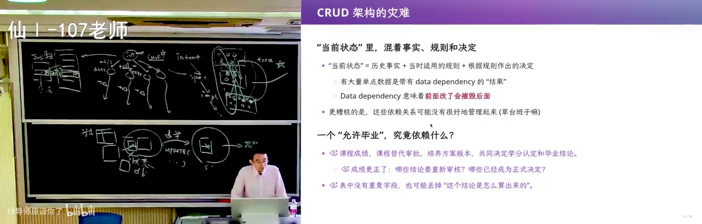
问题在于这个「当前状态」把历史全丢了：库里同一个姓名存了两次，就会出现内部不一致；「是否允许毕业」这一列是由学分、毕设状态等一堆历史触发算出来的，辅导员要导出毕不了业的学生逐个谈话，可你只知道 0/1，不知道为什么。计算过程一丢，软件就成了物理过程的有损投影：政策更新了培养方案还没导入，或者第一周仙一那片教室在修、系统里没有建模，最后都靠手改。时间一长，库里堆满无法解释的黑洞——没交学费的人为什么毕业了。所以碰上南大院系调整，把计算机系改成计算机学院，CRUD 这个 single point of truth 就瑟瑟发抖。
1:25:05–1:30:00 · 计算机系改名的两难
改也不对，不改也不对：改了，历史记录就变成「2011 年毕业于南京大学计算机学院」，与事实不符，打印证明也是错的；不改，所有 department_id 还指向旧系，得建新对象、理清新旧关联，做一次数据库迁移，而迁移要考虑历史上所有情况，库里本来就有大量不一致，规则很难写，还可能把库整个搞坏。在测试环境迁移和把全校真实数据迁一遍完全是两回事，就像他当年把选课记录改成 1 那样手抖。所以这类系统到今天都是手艺活：厂商 2000 年成立时参考一个现成的企业架构做了 CRUD 教务系统，抢下第一桶金，然后背着技术债扛过几十年教改；他读博时隔壁软件工程组接研究生院教务系统，二三十万的单子在定制软件里算小的，赶上研究生扩招、培养类型变多，最后成了屎山，被公司统一维护的系统取代。
1:30:00–1:36:50 · 只追加事实重放状态
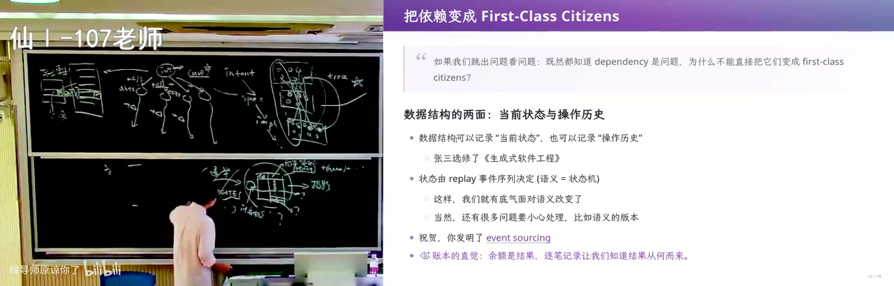
他设想重做一个教务系统：single point of truth 太危险，数据结构课上的 persistent data structure 能保留所有历史——在树上做路径复制，从根到改动处长出新节点，旧节点全留着。存状态、存操作、存 delta 三种视图是等价的，分别对应 CRUD、WAL 日志、git 这样的版本管理，都能回放出当前状态。于是「先记下所有事情」：张三退学、复学都可以 replay，事实不可篡改，做错了退回快照重来，院系调整也只是一个事件——查 2007 年入学的人，就裁出和他相关的历史再 replay。这就是 event sourcing，从历史事件生成状态而不是直接维护 CRUD 状态；代价是性能，要靠快照和缓存，已经在屎山上改造也很困难，CQRS、DDD 这些名词可以看，但回到 first principle 就够了。
讲了什么
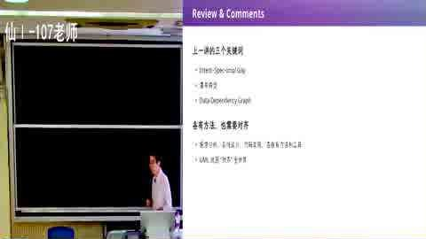
画面解读： 开场回顾瀑布模型：意图→规格→实现→维护，层间是数据依赖，错一层会往回污染，所以要可追踪性；再补「软件不软」——一个 bit 翻掉就能让程序无限读数。AI 让实现变便宜，但意图→规格、产品设计与架构仍是杠杆。
开场回顾 Royce 的瀑布模型：intent → spec → implementation → 维护，每一层之间是 data dependency，错了会往回污染一大片，所以需要 traceability、UML 这些工具。他补了一个「软件不软」的论证：软件是纯逻辑制品，容不下细微差错。比如程序读入 N=1，如果宇宙射线把 unsigned int 的最高位翻成 1，N 就变成巨大数，程序会无限读数直到 memory error；数据中心里也会因热噪声出现 silent error，同一条指令在不同机器上结果不同。所以「软」只是错觉。
软件工程难教，是因为学生只能从最底层（C 语言、写代码）往上走，没有一手痛苦就做不好需求。AI 时代实现变便宜了：他只要把边界划清楚、validation 设计好，可以不太看 AI 写的代码；但 intent → spec、产品设计、架构这三段仍是杠杆——同样一个 MVP 需求，加几个字的 prompt（CLI 还是 client/server）就会得到完全不同的架构，一旦 db.ts 写进上下文，后面每个需求都带着这个技术债走。MVP 要选最重要的功能，别提前调按钮样式，因为上层设计一变，按钮样式就白做。
画面解读： 拿南大教学平台当样本：让 agent 写成带形式化 ID 的需求说明书，再交给只看文档的 sub agent 复现，页面能跑却出现缺课次数超课时的 bug。需求变更则更狠：离散数学拆成两门，毕业、重修、抵扣全被穿透，最后靠院长特批手改数据库。
需求工程部分，他拿南大本科教学服务平台做样本：让 agent 用浏览器探索「和教师相关」的功能，生成一份需求说明书。这份文档有调研方法、证据边界、业务目标、成功标准、用例规约、功能需求、术语表、验收场景、需求清单，每个需求有形式化 ID，能建 traceability；然后再起一个 sub agent，只给它这份需求说明书（不看真实系统），实现一个假的教务系统。结果页面、教学任务、教材编辑、学生名单、缺课记录都能跑，甚至「保存记录」也成功；但也暴露 bug：缺课次数可以填到超过总课时，说明前端校验没做全。作者用这个说明：需求写清楚后，编码、traceability、测试 AI 都能接；但需求本身要靠无尽沟通，要有同理心——你的用户可能是 53 岁、快退休、上大学时没怎么用过电脑的教务老师，不是你自己这种 geek。
然后讲需求变更如何摧毁架构。学校把离散数学拆成上下两门，毕业/保研规则就变了：原来「必须修离散数学」，现在要「离散数学 或 离散数学一」，下拉框要加「或」，还要处理重修、转院系课程抵扣、先修课替代……每加一条规则，屎山长一截。更麻烦的是系统外的事实：学生马上毕业、春季学期不再开课，最后只能教学院长特批，工程师手改数据库把「毕业条件」改成满足。他 2018 年还亲身撞过一个 bug：把某学生缺课次数从 0 改成 1，所有能选到该学生的页面直接 500，最后工程师进数据库修条目。结论是「没有银弹」，早期决策会跟着软件一辈子。
画面解读： 从 10 行代码讲架构：getopt 把参数收进解析状态再分派，就是把变化隔在稳定接口后；同一道汉诺塔的四种写法用来衡量「压缩就是智能」。再讲 Excel 里生成二维码：公式直写必成一坨，正解是先造中间语言，再分别翻译成程序与公式验证。
架构部分从 10 行代码讲起：main 里读入、处理、输出；命令行程序用 getopt 把 argv 解析成一个 parsing state，再 switch，这就是把复杂性隔开的最小架构。接着是汉诺塔的四种写法：GPT-6 走数学路线（用二进制末尾零个数、盘子移动方向，高度优化但难读）；DeepSeek v4 flash 写出「递归就是栈」的优雅版本（把剩余任务压栈，每次执行栈顶）；豆包方案对但代码有瑕疵；作者自己的版本是把 C 语言的小步语义翻译成状态机，能机械地把任意递归转成非递归，对汉诺塔是 overkill，但作为理解程序语义的练习很好；CSDN 上搜到的版本比 AI slop 还糟。他说「压缩就是智能」，同一问题在不同抽象层的表达，能看出架构水平。
2000 行的例子是「在 Excel 里生成二维码」。需求看似明确：一个输入单元格、一个输出 01 矩阵；但 Excel 公式表达能力有限，直接写会得到一坨不可维护的巨型公式；Excel 还有版本差异（VLOOKUP vs XLOOKUP），兼容旧版还是只用新版会让需求变模糊；单元格位置一改，硬编码全崩。他的架构是：定义一个中间语言（表达式树），每个节点既能翻译成 Python（用来验证逻辑），也能翻译成 Excel 公式（用来交付）；LLM 只负责生成中间语言的二维码计算逻辑；之后还能在中间语言上做改写优化（循环不变量外提、profiling-guided optimization），Excel 版本变了只需换算子实现。这和 getopt 是同一个套路：先找一个稳定的中间表示，把变化挡在外面。
最后是 50 万行的教务系统。AI 生成的版本是一个 54KB TSX + 38KB services 的单体，AI 自己评价「经典三层单体、前后端分离、乐观锁、幂等、事务、审计、统一错误处理，可维护」；作者承认它有工程直觉，但本质仍是 CRUD。CRUD 的世界观是「软件 = 物理世界在信息世界的投影」，当前状态用数据库表表示，退学就是 update，页面是状态的投影。问题在于：当前状态丢掉了历史。比如「是否允许毕业」这个字段是由学分、毕业设计等一堆历史计算出来的，你只知道 0/1，不知道 why；政策变了、培养方案没导入，系统里就出现无法解释的不一致，最后靠手改。院系改名「计算机系 → 计算机学院」也是：改对象名，历史毕业记录就变成「2011 年毕业于计算机学院」与事实不符；不改，所有 department_id 又指向旧系，必须做数据库迁移，而迁移要面对历史上所有情况，还可能把库搞坏。
画面解读： 回到 50 万行的教务系统：AI 写出的单体有乐观锁、事务、审计，本质仍是 CRUD——当前状态丢掉了历史，毕业字段只是别人算完又忘了的结论，院系改名还会让旧毕业记录说谎。解法是 event sourcing：只追加事实、重放出状态。
于是他给出 event sourcing：不维护当前状态，只追加不可篡改的事实/操作日志；当前状态 = replay 所有事实的投影。可以存状态、存操作、存 delta，三者等价（快照、git、WAL 日志）；查询时可以裁出与某事实相关的历史再 replay，所以能查过去、也能查现在；改错了可以退回快照重放。代价是性能（需要快照/缓存）、以及如果系统已经是屎山，改成 event sourcing 很困难。CQRS、DDD 这些概念可以看，但不是必须；回到 first principle「记录事实、派生状态」，即使没听过这些名词也能设计对。他还讲了一个真实故事：隔壁软件工程组接研究生院教务系统，二三十万的单子，CRUD 架构，赶上研究生扩招、类型变多，最后维护不下去，被公司系统取代。
关键点
- 软件不「软」：一个 bit 翻转就能让程序崩溃；「软」是相对物理世界弹性而言的错觉。
- MVP 的隐藏杠杆是架构：同样的需求，CLI 还是 client/server、早不早引入数据库，会决定后面所有上下文和技术债。
- 需求变更不是加一个字段，而是「离散数学拆成两门」这种会穿透毕业、保研、选课、抵扣的连锁重构。
- 10 行代码也有架构：
getopt把 argv 收进 parsing state，就是把变化隔离在一个稳定接口后面。 - 二维码进 Excel 的解法是「中间语言 + 两个后端（Python 验证 / Excel 交付）」，本质是编译器架构。
- CRUD 的死穴是丢掉历史和派生依赖；event sourcing 用「追加事实 + replay」换回可追溯、可回退、可推演。
为什么值得看
给做业务系统、被需求变更和历史数据不一致折磨的人看。它从教务系统、汉诺塔、Excel 二维码一路推到 event sourcing，每例都能对上真实开发的痛；前半段需求文档的生成与复现 demo 也值得参考。坑是跨度大，没做过业务系统会觉得前半段散。
我的一句话
这讲最值钱的是那句「当前状态丢掉了历史」——你库里那个 can_graduate 字段，不是事实，是别人替你算完又忘了怎么算的结论。